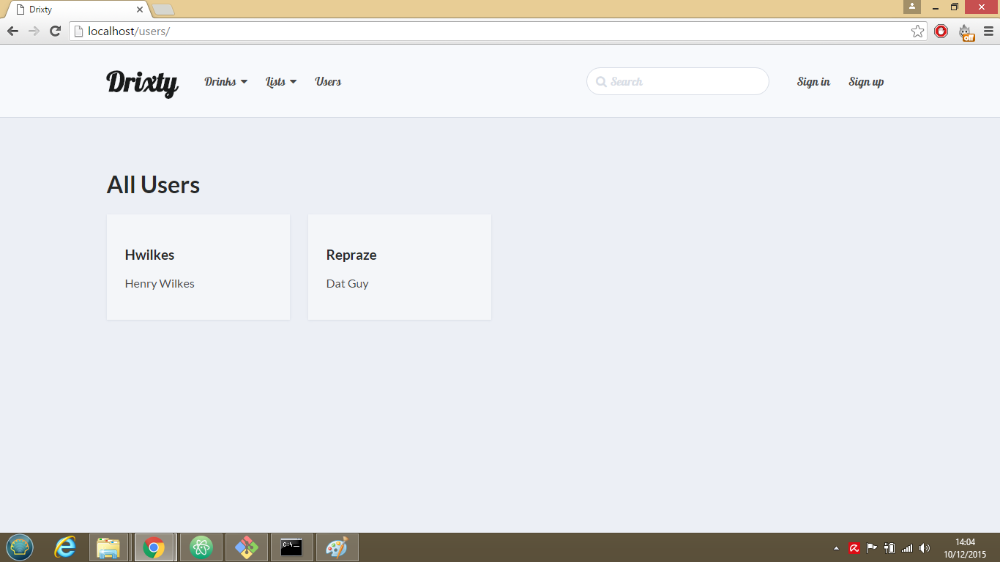
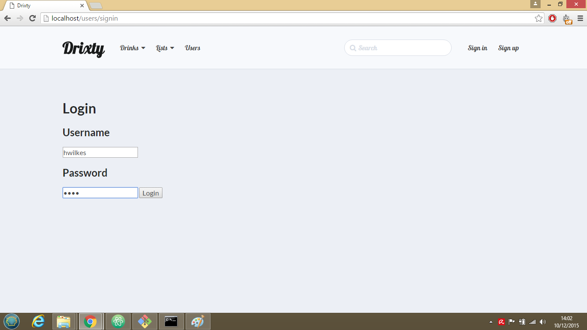
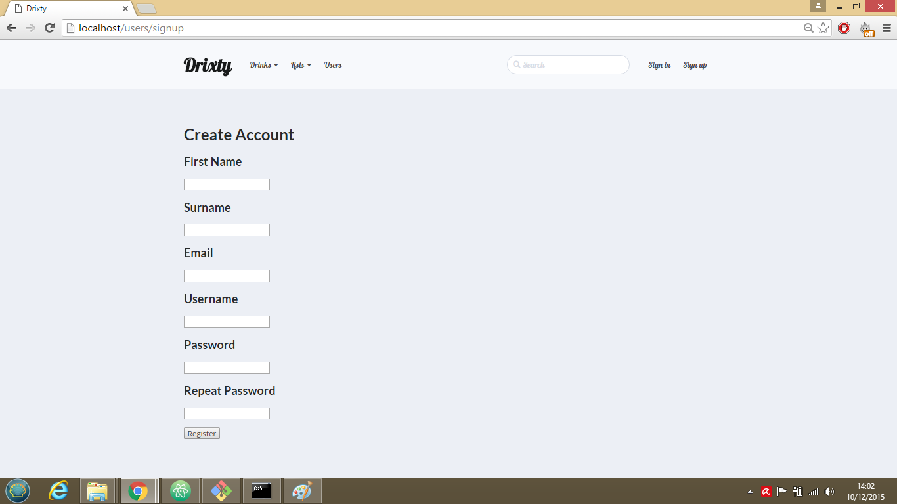
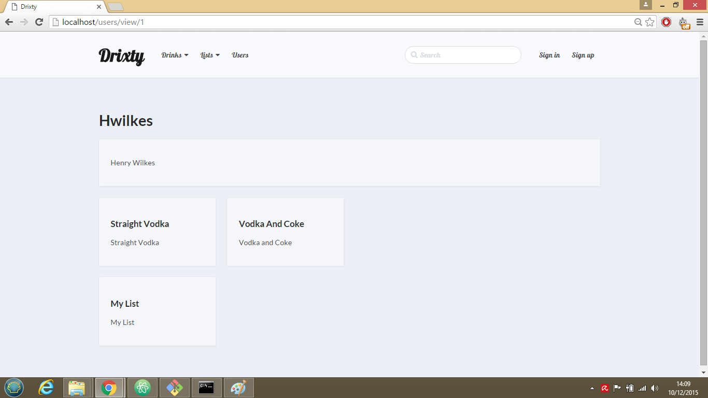

A major requirement of the prototype was for it to be able to store user details and handle persistent user sessions. The user details stored in the database include the user's username, password hash and salt, email, first and last name, and any drinks or lists they have created. On first visiting the site the user is invited to register an account using the User Registration page. In future version of the site we would like to include email verification of new user accounts, with the activation status of a user account stored in the database
Once the user has created an account and logged into the site they will be able to create new lists and drinks, as well as edit existing one's they have created. The website will redirect the user to the splash page in the event of them attempting to access the creation or edit pages for drinks/lists if they have not logged in or are not the creators of the drinks/lists in question.
User sessions are implemented using the express-session package. This package allows sessions to be created when a user visits the sites, and for data such as user details to be persisted across the site. The cookie-parser package allows said information to be stored as cookies and so persisted across multiple sessions for the lifetime of the cookie.
When accounts are created and users log in verification of the data passed is verified on both the client and server-side. Password verification is handled by the pwd package, which produces password hashes with PBKDF2. The password hashes and salts are stored in the database when the user account is created, and when a user logs in the password they enter is sent to the server and hashed using the salt from the database. It is then compared to the stored hash for that user in order to verify the password is correct. I'd like to in future possibly improve the security in handling user logins, and to allow user's to change their passwords in the account management page.
